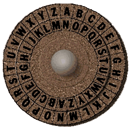
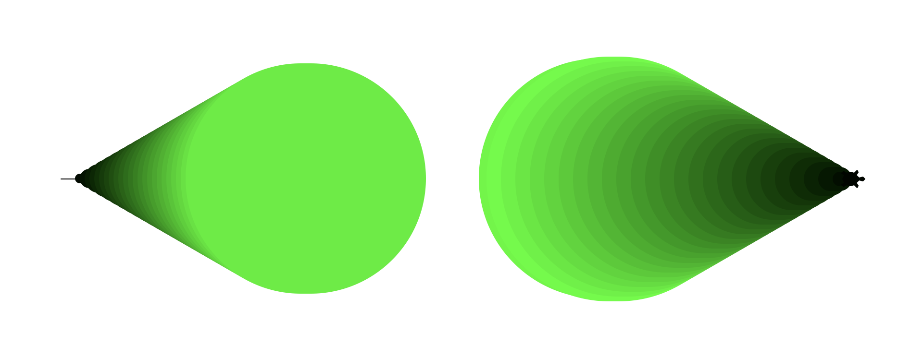
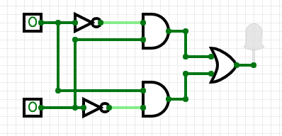
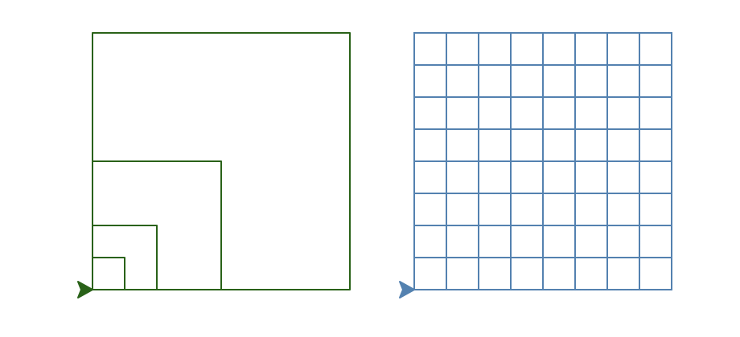
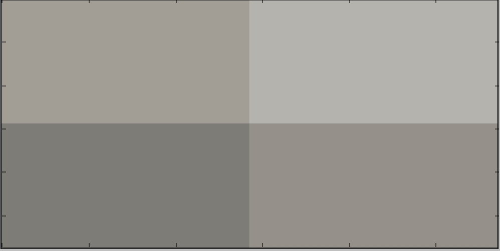
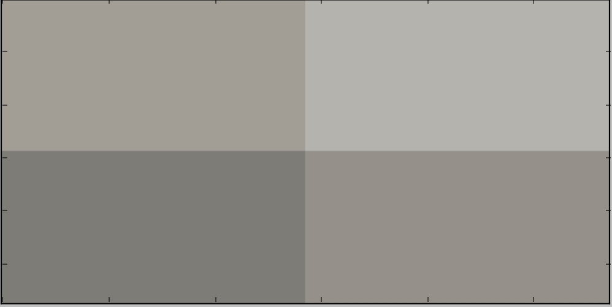

Submit the following programs via Gradescope:
- Due Date: 9 February Reading: Think CS: Chapters 1 & 2 & Lab1
Write a program that prints "Hello, World!" to the screen.
Hint: See the Lab 1.
- Due Date: 10 February Reading: Think CS: Chapter 4 & Lab1
Write a program that draws a hexagon.
Note: Whenever submitting a turtle program, choose a name for your file that is not turtle.py. When executing the "import turtle" statement, the computer first looks in the folder where the file is saved for the turtle module and then in the libraries (and other places on the path). So, it thinks the module is itself, causing all kinds of errors. To avoid this, name your program something like "myTurtle.py" or "program2.py".Hint: See the Lab 1.
- Due Date: 11 February Reading: Think CS: Chapter 4 & Lab1
Copy the program from Section 4.3 into a file on your computer and modify the program to have a 'cyan' background, tess color "red", and let tess draw a pentagon instead of a triangle and alex draw a triangle instead of a square:
Note: Make only the modifications indicated here, all other behaviors should stay the same. (i.e. distance forward, pen size etc.)
In programming, it is important to learn to follow instructions precisely. A small difference to you may result in a program that runs incorrectly. This is part of what you are learning here: follow specifications to the letter.
- Due Date: 16 February Reading: Think CS:
Chapter 4 & Lab1
Write a program that implements the pseudocode ("informal high-level description of the operating principle of a computer program or other algorithm") below:
Set the turtle shape to be a 'circle' Set the color to 'blue' Repeat 9 times: Walk forward 30 steps Turn left 40 degrees Turn left 90 degrees Repeat 9 times: Walk forward 30 steps Turn left 40 degrees Turn left 90 degrees Repeat 9 times: Walk forward 30 steps Turn left 40 degrees Turn left 90 degrees Repeat 9 times: Walk forward 30 steps Turn left 40 degreesYour output should look similar to:
- Due Date: 17 February Reading: Think CS:
Chapter 4 & Lab1
Write a program that uses turtle graphics to generate the image below:
Hints: Let the turtle move forward 200 steps and use the sequence forward/left/stamp.
This assignment aims to challenge you to analyze the image to deduce the process (given a description of the output, write the program to produce it), which is how software developers often approach problems.
So what should you do? Try to puzzle out the image, break down what the turtle does, then apply what you have learned so far about definite loops (for loops) and turtle graphics to reproduce that process. Here some guiding questions:- How many turtles do you see? How many repetitions?
- What does the turtle do in each repetition?
- Once you figured out the answer to the previous two questions, play around with the angle to produce the image.
- Look up the turtle functions pencolor() and fillcolor() to produce the turtle colors?
- You have used that background color before, what color was it?
Here is a complete list of turtle commands for your reference.
Lecture / Lab 2
- Due Date: 18 February Reading: Think CS: Chapters 2 & 9 & Lab 2
Using the string commands introduced in Lab 2, write a Python program that prompts the user for a message, and then prints that message, the message in upper case letters and the message in lower case letters.
A sample run of your program should look like:>
Enter a message: Mihi cura futuri Mihi cura futuri MIHI CURA FUTURI mihi cura futuri
Another sample run:
Enter a message: I love Python! I love Python! I LOVE PYTHON! i love python!
Hint: Your program should be able to take any phrase the user enters. To do that, you need to store the phrase in a variable and print variations of the stored variable.
- Due Date: 19 February Reading: Think CS: Chapters 2 & 9 & Lab 2
Combining ord() and chr() write a program that:
- Prompts the user to enter a message
- Prints each character in the message, its Unicode number + 1 and the character corresponding to that number.
Enter a message: abc a 98 b b 99 c c 100 d
Another run:
Enter a message: Hello H 73 I e 102 f l 109 m l 109 m o 112 p
Note: the grading scripts expect the email associated with your Gradescope account. If you get an error that the email does not match, compare carefully the email you printed and the email on file.
- Due Date: 22 February Reading: Think CS: Section 4.7 & Lab2
Write a program that prints out multiples of 3 up to 45.
The output of your program should be:
3 6 9 12 15 18 21 24 27 30 33 36 39 42 45
Hint: Use the
start, stop, stepoptions in therange()function and print the loop variable. - Due Date: 23 February Reading: Think CS: chapter 9, Section 10.24 & Lab 2
Write a problem that does the following:
- Prompt for a phrase & read it in.
- Make the phrase upper case.
- Split up the phrase into words.
- Take the first letter of each word (keep in mind that split() returns a list of the words ) and concatenate from last to first to make a backwards acronym of it
Enter a phrase: City University New York Your phrase in capital letters: CITY UNIVERSITY NEW YORK Acronym: YNUC
Another run:
Enter a phrase: Hunter College Your phrase in capital letters: HUNTER COLLEGE Acronym: CH
- Due Date: 24 February Reading: Think CS: Chapters 2 & 9 & Lab 2

(The cipher disk above shifts 'A' to 'N', 'B' to 'O', ... 'Z' to 'M', or a shift of 13. From secretcodebreaker.com.)Write a program that prompts the user to enter a word and then prints out the word with each letter shifted right by 13 characters.
Assume that all inputted words are in upper case letters: 'A',...,'Z'.A sample run of your program should look like:
Enter a word: ZEBRA Your word in code is MROEN
Hint: See the example programs from Lecture to find out how to wrap around (Lecture slides can be found on the course outline).
Lecture / Lab 3
- Due Date: 25 February Reading: Think CS: Chapter 4 & Lab 3
Modify the program from Lab 3 to show the shades of green and then move the turtle forward 300 steps without writing (use the penup() and pendown() turtle functions) and repeat the same loop, but backwards.
Your output should look similar to:

Note: when we say "Modify the program..." only make the requested modifications, everything else is assumed to be keept as is. - Due Date: 26 February Reading: Think CS: Chapter 4 & Lab 3
Now modify the program from Lab 3 to transition from shades of red to shades of green by moving forward 25 steps instead of 10.
Your output should look similar to:
Hint: decrease the amount of red while increasing the amount of green by the same amount using the loop variable
- Due Date: 1 March
Reading: Think CS: Section 10.24, Lab 2 & Lecture 3
Write a program that prompts the user to enter a list of names. Each person's name is separated from the next by a hyphen surrounded by spaces (" - ") and the names are entered firstName lastName, (i.e. separated by space " " ). Your program should then print out the names, one per line, with the last name followed by the first initial of the first name, followed in turn by "."
A sample run of your program should look like:
Please enter your list of names: Ada Lovelace - Williamina Fleming - Grace Hopper - Annie Easley Lovelace A. Fleming W. Hopper G. Easley A. Thank you for using my name organizer!
Hint: See Section 10.24 for a quick overview of split(). Do this problem in parts: first, split the list by person (what should the delimiter be?). Then, split each of person's name into first and last name (what should the delimiter be here?). If you have a string str, how do you index to extract the first character?
- Due Date: 2 March
Reading: Section 10.24, Lab 2 & Lab 3
Write a program that asks the user for a 6-digit hex number and uses it as the hex code to stamp 6 turtles of that color.
Let the turtle walk forward 50 steps between stamps and use the sequence stamp/forward (i.e. stamp before moving the turtle, such that the last turtle is produced by its position, not a stamp).A sample run of the program:
Please enter a 6-digit Hexadecimal number: 00FFFF
which produces an output:
Hint: don't forget to add the '#' at the beginning of the hex number to use it as a hex encoding for color! For string concatenation see Lab 2. You may assume that the user always inputs a valid 6-digit Hex number.
- Due Date: 3 March
Reading: Think CS: Section 8.10 &
Datacamp Numpy Tutorial & Lab 3
Write a program that asks the user for a name of an image .png file and the name of an output file. Your program should create a new image that has only the green and blue channels of the original image (that is, no red channel).
To test your program you can download csBridge.png
A sample run of your program should look like:
Enter name of the input file: csBridge.png Enter name of the output file: nored.png
Sample input and resulting output files:


IMPORTANT: before submitting your program for grading, remove the commands that show the image (i.e. the ones that pop up the graphics window with the image). The program is graded on a server on the cloud and does not have a graphics window, so, the plt.show() and plt.imshow() commands will give an error. Instead, the files your program produces are compared pixel-by-pixel to the answer to check for correctness.
Hint: See Lab 3.
Lecture / Lab 4
- Due Date: 4 MarchReading: Think CS: Chapter 2 & Lab 4
Write a program that asks for the temperature in degrees Celsius (C) and outputs the temperature in degrees Fahrenheit (F) where F = (C*9/5)+32.
A sample run of your program should look like:
Please enter the temperature in degrees Celsius: 15 The temperature is 59.0 degrees Fahrenheit
Hint Don't forget to convert the input into a numeral for calculation. - Due Date: 5 March Reading: Think CS: Chapter 4 and Chapter 7.4, Lab1 & Lab 4
Write a program that implements the following pseudocode using turtles:
Ask the user for number of stamps Set the turtle shape to 'arrow' Set the turtle color to 'cyan' Lift the turtle pen up Set steps to 10 Repeat stamps times: Stamp If the number of this loop iteration is divisible by 2 Increment steps by 3 Move fowrard by steps Turn right by 24 degreesA sample run of your program should look like:
Enter number of stamps the turtle will print: 50
and the output should look similar to:
For your reference, here is a complete list of turtle commands.
- Due Date: 8 March
Reading: Think CS: Datacamp Numpy Tutorial, Lab 3 & Lecture 4
In Lecture 4, we designed a program to make a Hunter logo 'H' on a 10x10 grid. Write a program that creates a green 'T' logo for Thomas Hunter on a 30x30 grid.
The grading script is expecting:
- The file to be saved as: logo.png.
- The grid to be 30 x 30.
- The 'T' to be 0% red, 100% green, and 0% blue. The top part of the 'T' should be the top third of the image and the bottom part of the 'T' should be the center third of the image.
- The remaining pixels in the image should be white (100% red, 100% green, and 100% blue).
Note: before submitting your program for grading, remove the commands that show the image (i.e. the ones that pop up the graphics window with the image). The program is graded on a server on the cloud and does not have a graphics window, so, the plt.show() and plt.imshow() commands will give an error. Instead, the files your program produces are compared pixel-by-pixel to the answer to check for correctness.
Hint: See notes from Lecture 4. (Lecture slides can be found on the course outline)
- Due Date: 9 March Reading: Think CS: Section 2.7 & Lab 4
Write a program that implements the pseudocode below:
Ask the user for their taxable income. Compute and output the marginal tax rate as follows: - Error if income is negative - 10% if income $0 - $9,700 - 12% if income $9,701 – $39,475 - 22% if income $39,476 – $84,200 - 24% if income $84,201 – $160,725 - 32% if income $160,726 – $204,100 - 35% if income $204,101 – $510,300 - 37% if income $510,301+
Think about the order of your decisions: elif/else clauses are considered only if the previous condition is false!
A sample run of your program should look like:
Enter taxable income: 120000 Marginal tax rate: 24%
and another sample run:
Enter taxable income: -50000 Marginal tax rate: Error
Hint: See Section 7.7.
- Due Date: 10 March
Reading: Think CS: Chapters 2 & 8.10 &
Datacamp Numpy Tutorial & Lab 4
Modify the flood map of NYC from Lab 4 to color the region of the map with elevation greater than 5 feet and less than or equal 20 feet above sea level the color grey (50% red, 50% green, and 50% blue).
Your resulting map should look like:

and be saved to a file called floodMap.png.
Note: before submitting your program for grading, remove the commands that show the image (i.e. the ones that pop up the graphics window with the image). The program is graded on a server on the cloud and does not have a graphics window, so, the plt.imshow() and plt.show() commands will give an error. Instead, the files your program produces are compared pixel-by-pixel to the answer to check for correctness.
Lecture / Lab 5
- Due Date: 11 March Reading: Think CS: Section 8.10 &
Datacamp Numpy Tutorial, Lab 3, Lab 4 & Lecture 4
REVIEW from Lecture/Lab 4
Write a program that creates an image of purple and cyan horizontal stripes. Think color not shade: Purple = red and blue only, no green. Cyan = green and blue only, no red.
Your program should ask the user for the size of your image, the name of the output file, and create a .png file of stripes. For example, if the user enters 10, your program should create a 10x10 image, alternating between purple and cyan stripes.A sample run of the program:
Enter the size: 10 Enter output file: 10stripes.png
Another sample run of the program:
Enter the size: 50 Enter output file: 50stripes.png
Note: before submitting your program for grading, remove the commands that show the image (i.e. the ones that pop up the graphics window with the image). The program is graded on a server on the cloud and does not have a graphics window, so, the plt.show() and plt.imshow() commands will give an error. Instead, the files your program produces are compared pixel-by-pixel to the answer to check for correctness.
Hint: See notes from Lecture 4.
- Due Date: 12 March
Reading: Think CS: Chapter 4, Lab1, Lab 2 & Lab 4
Write a program that implements the pseudocode ("informal high-level description of the operating principle of a computer program or other algorithm") below for drawing a spiral of squares using turtles:
Observe the process: the outer loop shifts the square then the inner loop draws the square!Let length be 25 Repeat 100 times: Turn right 5 degrees Increment length by 2% Repeat 4 times: Walk forward length steps Turn right 90 degreesYour output should look similar to:
Reminder: to calculate 2% of quantity x, you can multiply x by 0.02. To increment, you can add that number to x or you can directly multiply x by 1.02 - Due Date: 15 March Reading: Think CS: Chapters 7 & 8.10 &
Datacamp Numpy Tutorial & Lab 5
Following Lab 5, write a program that asks the user for the name of a .png file and print the number of pixels that are nearly white (the fraction of red, the fraction of green, and the fraction of blue are all above 0.8).
For example, if your file was of the snow pack in the Sierra Nevada mountains in California in February 2014:

then a sample run would be:
Enter file name: caDrought2014.png Snow count is 38010
Note: for this program, you only need to compute the snow count. Showing the image will confuse the grading script, since it's only expecting the snow count.
- Due Date: 16 March Reading: Burch's Logic & Circuits & Lab 5
Build a circuit that has the same behavior as a NOR gate (i.e. true only when all inputs are false) using only AND, OR, and NOT gates.
Here is the truth table for the nor operator:
in1 in2 in1 nor in2 True True False False True False True False False False False True Save your expression to a text file. See Lab 5 for the format for submitting logical expressions to Gradescope.
- Due Date: 17 March
Reading: Burch's Logic & Circuits
Write a logical expression that is equivalent to the Exclusive OR gate on 2 inputs, called in1, in2:
- If either one or the other (but not both) input is True, then your expression should evaluate to True.
- Otherwise (both inputs are True or both inputs are False), then your expression should evaluate to False.

Save your expression to a text file. See Lab 5 for the format for submitting logical expressions to Gradescope.
Lecture / Lab 6
- Due Date: 18 March Reading: Burch's Logic & Circuits & Lab 5
Logical gates can be used to do arithmetic on binary numbers. For example, we can write a logical circuit whose output is one more than the inputted number. Our inputs are in1 and in2 and the outputs are stored in out1, out2, and out3.

Here is a table of the inputs and outputs:
Inputs Outputs Decimal
Numberin1 in2 Decimal
Numberout1 out2 out3 0 0 0 1 0 0 1 1 0 1 2 0 1 0 2 1 0 3 0 1 1 3 1 1 4 1 0 0 Toggle the inputs, by clicking on the input boxes for in1 and in2, and observe the output. Then translate the circuit into a logical expression.
Submit a text file (.txt) with each of the outputs on a separate line:
#Name: YourNameHere #Date: April 2017 #Logical expressions for a 3-bit incrementer out1 = ... out2 = ... out3 = ...
Where "..." is replaced by your logical expression (see Lab 5).Note: here's a quick review of binary numbers.
- Due Date: 19 March Reading: 10-mins to Pandas, DataCamp Pandas & Lab 6
Modify the program from Lab 6 that displays the NYC historical population data. Your program should ask the user for the name of a borough and the name of the output file.
The program should compute the minimum, maximum, average, median and standard deviation of the population of the borough entered by the user and then display the fraction of the population that has lived in that borough over time.IMPORTANT: The grading script expects the new column to be called 'Fraction'
A sample run of the program:
Enter borough name: Brooklyn Enter output name: BrooklynFraction.png Min: 2017 Max: 2738175 Mean: 1252437.5384615385 Median: 1002564.5 Standard Deviation: 1153123.5551968655
The file BrooklynFraction.png:
Note: before submitting your program for grading, remove the commands that show the image (i.e. the ones that pop up the graphics window with the image). The program is graded on a server on the cloud and does not have a graphics window, so, the plt.show() and plt.imshow() commands will give an error. Instead, the files your program produces are compared pixel-by-pixel to the answer to check for correctness.
- Due Date: 22 March Reading:
Github Guide & Lab 6
In Lab 6, you created a github account. Submit a text file with the name of your account. The grading script is expecting a file with the format:
#Name: Your name #Date: February 2020 #Account name for my github account AccountNameGoesHere
Note: it takes a few minutes for a newly created github account to be visible. If you submit to gradescope and get a message that the account doesn't exist, wait a few minutes and try again.
- Due Date: 23 March Reading:
Ubuntu Terminal Reference Sheet & Lab 6
Write an Unix shell script that prints: Hello!
Then prints on a new line: This is $USER's first shell script!!!
where $USER is a built-in variable that stores the name of the user.A sample run of the program with user tizianaligorio:
Hello! This is tizianaligorio's first shell script!!!
Submit a single text file containing your shell commands. See Lab 6 for details.
Note: The output will not display a username on Gradescope since there is no login on the cloud image where the grading script runs. - Due Date: 24 March
Reading: 10-mins to Pandas, DataCamp Pandas & Lab 6
Download the Volcanos dataset and look at the data and, in particular, the column names.
Then, write a program that
- Ask the user for the name of the input file.
- Print the average elevation for each Dominant Rock Type
- Print the height of the tallest volcano in Italy
Enter file name: volcanicEruptions.csv The average height per rock type is as follows: Dominant Rock Type Andesite / Basaltic Andesite 2153.494810 Basalt / Picro-Basalt 1129.892495 Dacite 2538.904255 Foidite 1519.600000 No Data 969.810345 Phono-tephrite / Tephri-phonolite 1390.333333 Phonolite 2784.222222 Rhyolite 1564.363636 Trachyandesite / Basaltic Trachyandesite 1820.700000 Trachybasalt / Tephrite Basanite 1506.287671 Trachyte / Trachydacite 2070.555556 Name: Elevation (Meters), dtype: float64 The tallest volcano in Italy is 3330 meters high.
Hint: You should use groupby() and get_group() as described in Lab 6.
Lecture / Lab 7
- Due Date: 25 March Reading: 10-mins to Pandas, DataCamp Pandas & Lab 7
Modify the program from Lab 7 that displays shelter population over time to:
- ask the user to specify the input file,
- ask the user to specify the output file,
- make a plot of the fraction of the total population that are children over time from the data in input file, and
- store the plot in the output file the user specified.
A sample run of the program:
Enter name of input file: DHS_2015_2016.csv Enter name of output file: dhsPlot.png
which produces an output:

Note: The grading script is expecting that the label (i.e. name of your new column) is "Fraction Children".
- Due Date: 26 March Reading: 10-mins to Pandas, DataCamp Pandas, Lab 6 & Lab 7
Let's explore another dataset!
Consider the the Airbnb dataset of New York listings from 2019.
You can obtain the csv file directly here.
First download and inspect the data by looking at the column names and type of data in each column.Now modify the programs from Lab 6 that aggregates rainfall data and the program from Lab 7 that plots shelter population to write a new program that:
- Ask the user for the name of the input file.
- Ask the user for the name of the output file.
- To observe the average airbnb listing price in each borough:
- Use groupby() to aggregate the data by 'neighbourhood_group', which in this dataset represents the borough, and average the 'price' column
- Make a bar plot of the data grouped this way by using .plot.bar() on the grouped data
e.g. if you have
grouped_data = df.groupby( ...
then use grouped_data.plot.bar() to generate the bar plot - Label the x-asix using plt.xlabel('Borough')
- Label the y-axis using plt.ylabel('Average Price')
- Store the plot in the output file the user specified.
A sample run of the program:
Enter name of input file: airbnb2019.csv.csv Enter name of output file: airbnb_avg_price_barplot.png
which produces an output:
Note: To make the borough names visible at the bottom of the bar plot, use plt.gcf().subplots_adjust(bottom=0.25) before plt.gcf() (see Lab 6 for how to save the plot to a file.)
- Due Date: 6 April Reading: Think CS Section 6.7 & Lab 7
Write a program, using a function main() that prints "Hello Functions!" to the screen. The program should be executable as stand-alone program as well as included as a module in another program. See Lab 7.
- Due Date: 7 April
Reading: 10-mins to Pandas, DataCamp Pandas & Lab 7
In Lab 7, we worked through a program that displayed the homeless shelter occupancy over time. The same approach can be used for displaying any dataset where the date and time are stored.
For this program, use the lab as a starting point to display public school attendance from NYC OpenData. If you would like to test your program on other data, you can filter for an individual school by viewing the data and filtering on the school number ("School DBN"). Export the file as CSV and save. There is a sample file for the high school on campus on github
Modify the program from Lab 7 that displays shelter population over time to:
- Ask the user to specify the input file,
- Ask the user to specify the output file,
- Convert the date column (which is stored as 'YYYYMMDD') to a datetime format recognized by pandas, for example if your dataframe is df, overwrite the 'Date' column to be:
df["Date"] = pd.to_datetime(df["Date"].apply(str))
- Make a plot of the percent of absent students over time from the data in the input file, and
- Store the plot in the output file the user specified.
A sample run of the program:
Enter name of input file: dailyAttendanceManHunt2018.csv Enter name of output file: manHunt.png
which produces an output:
Note: The grading script is expecting that the label (i.e. name of your new column) is "% Absent" and the range of values be between a percentage between 0 and 100 (Hint: what do you multiply by to convert a fraction into a percentage?).
- Due Date: 8 April
Reading: Think CS: Chapter 7.4, Turtle Graphics & Lab 6
Review from Lecture/Lab 4
The program, turtleString.py (available at: https://github.com/HunterCSci127/CSci127) takes a string as input and uses that string to control what the turtle draws on the screen (inspired by code.org's graph paper programming). Currently, the program processes the following commands:
- 'F': moves the turtle forward 50 steps
- 'L': turns the turtle 90 degrees to the left
- 'R': turns the turtle 90 degrees to the right
- '^': lifts the pen
- 'v': lowers the pen
- 'r': change turtle color to red
- 'g': change turtle color to green
- 'b': change turtle color to blue
Modify this program to allow the user also to specify with the following symbols:
- 'c': change the turtle color to "cyan"
- 'T': stamps a turtle shape
- 'S': draws a square with side = 50 and sequence forward/left
Hint: See Lecture 4 notes.
Lecture / Lab 8
- Due Date: 9 April Reading: Think CS: Chapter 6 & Lab 8
Write a function, computeFare(), that takes as two parameters: the zone and the ticket type, and returns the Copenhagen Transit fare.
- If the zone is 2 or smaller and the ticket type is "adult", the fare is 23.
- If the zone is 2 or smaller and the ticket type is "child", the fare is 11.5.
- If the zone is 3 and the ticket type is "adult", the fare is 34.5.
- If the zone is 3 or 4 and the ticket type is "child", the fare is 23.
- If the zone is 4 and the ticket type is "adult", the fare is 46.
- If the zone is greater than 4, return a negative number (since your calculator does not handle inputs that high).
A template program, copenhagenTransit.py, is available on the CSci 127 repo on github. The grading script does not run the whole program, but instead tests your function separately ('unit tests') to determine correctness. As such, the name of the function must match exactly (else, the scripts cannot find it).
A sample run:
Enter the number of zones: 3 Enter the ticket type (adult/child): Adult The fare is 34.5
And another:
Enter the number of zones: 2 Enter the ticket type (adult/child): child The fare is 11.5
Hint: See Lab 8.
- Due Date: 12 April
Reading: 10-mins to Pandas, DataCamp Pandas & Lab 7 & Lab 8
Write a program that asks the user for a CSV of Dinosaur Genus data:
- There is a sample file on github.
- The total number of genera (in this dataset each row is a dinosaur genus, genera is the plural of genus)
- The count of dinosaur genera for each period
- The three most populated countries.
A sample run:
Enter file name: dinosaur.csv There are 1154 dinosaur genera. The number of dinosaur genera in each period: Cretaceous 763 Jurassic 265 Triassic 50 Late Cretaceous 30 Early Cretaceous 16 Early Jurassic 7 Jurassic/Cretaceous 7 Middle Jurassic 4 Late Triassic 3 Triassic or Jurassic 3 Triassic/Jurassic 3 Cretaceous 1 (unknown) 1 Early-Late Cretaceous 1 Name: Period, dtype: int64 The three most dinosaur-populated countries were: North America 274 China 217 South America 149 Name: Country, dtype: int64
This assignment uses data freely available on kaggle.com, and can be found at:
https://www.kaggle.com/kumazaki98/dinosaur-list.
Hint: See Lab 8 for counting values in structured data.
- Due Date: 13 April Reading: Think CS Chapter 6 & Lab 8
Write two functions, nestedPolygon() and fractalPolygon(). Both functions take three parameters: a turtle, an edge length and number of sides. The pseudocode for nestedPolygon() is:
nestedPolygon(t, length, sides): 1. If length > 10: 2. Repeat sides times: 3. Move t, the turtle, forward length steps. 4. Turn t left 360/sides degrees. 5. Call nestedPolygon with t, length/2 and sides.The pseudocode for fractalPolygon() is very similar:
fractalPolygon(t, length, sides): 1. If length > 10: 2. Repeat sides times: 3. Move t, the turtle, forward length steps. 4. Turn t left 360/sides degrees. 5. Call fractalPolygon with t, length/2 and sides.There is a subdtle difference in the pseudocode of the two functions above, but it is very important and makes the difference between the two images. Observe the execution and think about it!!!
A template program, nestingPolygons.py, is available on the CSci 127 repo on github. The grading script does not run the whole program, but instead tests your functions separately ('unit tests') to determine correctness. As such, the function names must match exactly (else, the scripts cannot find it). Make sure to use the function names from the github program (it is expecting nestedPolygon() and fractalPolygon()).
A sample run:
Enter edge length: 160 Enter number of sides: 4
which would produce:

- Due Date: 14 April Reading: Think CS: Chapter 6 and Section 8.10 & Lab 8
Fill in the missing functions:
- average(region): Takes a region of an image and returns the average red, green, and blue values across the region.
- setRegion(region,r,g,b): Takes a region of an image and red, green, and blue values, r, g, b. Sets the region so that all points have red values of r, green values of g, and blue values of b.
The functions are part of a program that averages smaller and smaller regions of an image until the underlying scene is visible (inspired by the elegant koalas to the max).
For example, if you inputted our favorite image, you would see (left to right):
 



and finally:
Use the template program, averageImage.py, available on the CSci 127 repo on github. The grading script does not run the whole program, but instead runs each of your functions separately ('unit tests') to determine correctness. As such, the names of the functions must match exactly the ones listed above (else, the scripts cannot find them).
IMPORTANT Do not remove anything below and including the comment that says:
###################################################################### ### DO NOT CHANGE ANYTHING BELOW AND INCLUDING THIS LINE ### ######################################################################
Hint: See notes from Lecture 8.
- Due Date: 15 April Reading: Think CS: Chapter 6 and Section 7.4 & Lab 8
Write a program that, given an input image, creates a tile-collage by repeating modified copies of the input image (inspired by the 2013 Nifty Collage by Mark Guzdial)
Using the template program, tilesCollage.py, available on the CSci 127 repo on github, fill in the missing functions:
- fourfold_tile(img) Takes an image and returns a new larger image that contains 4 copies of img in a tile layout, with 2 copies at the top and 2 copies at the bottom
- remove_hue(img, hue): Takes an image and a hue, either "red", "green" or "blue", and turns off the corresponding color channel in img. If the value of hue is not one of the expected, it prints: No such hue. This function does not return a value, it simply switches off the color channel on the input image.
- mirror(img, axis) Creates and returns a mirrored copy of img along axis, either 'x', 'y', 'xy' (mirrored along both x and y axes) If the value of axis is not one of the expected, it prints: Invalid axis.
A sample run of the program:
Enter input file name: octopus.png Enter output file name: collage.png
Which given input image:
Will produce the collage:
And another sample run of the program:
Enter input file name: marylin.png Enter output file name: warhol_collage.png
With input:
And output:
Hints:
- To fit four copies of img (two at the top and two at the bottom) the new image must be twice as large and twice as tall
- To mirror an image over an axis, think of it being the same image but it steps backwards on that axis (mirror on x axis means reversing the rows, etc.)
- To remove a hue, turn off that color channel (no light in that channel).
The grading script runs the whole program as well as each function separately ('unit tests') to determine correctness. As such, the function names must match exactly as indicated above (else, the scripts cannot find them).
Hint: See Lab 4 for type conversion and decisions, Lab 7 and Lab 8 for programming with functions.
Not for submission:
Once you have successfully submitted your program to Gradescope, play around with the program to create different collages:- Can you make collages with 6 tiles?
- Can the number of tiles be parameterized?
- Can you add a function that will create different color patterns?
- Can you randomize the color of each tile?
- Can you crop the image?
- Can you combine two or more input images?
- Anything else?
Lecture / Lab 9
- Due Date: 16 April Reading: Think CS: Chapters 4 and 6 & Lab 8
REVIEW from Lecture/Lab 4 & 7
Fill in the missing function to animate hurricane data (inspired by the 2018 Nifty Hurricane Program by Phil Ventura).
Your function, animate(t,lat,lon,wind) takes as input:
- t: a turtle,
- lat: an integer storing the current latitude,
- lon: an integer storing the current longitude, and
- wind: the current wind speed in miles per hour.
Your function should move the turtle to the current location (longitude, latitude), and then based on the Saffir-Simpson Hurricane Wind Scale, change the turtle to be:
- red and pen size 5 for Category 5 (windspeed > 157 mph)
- orange and pen size 4 for Category 4 (windspeed in 130-156 mph)
- yellow and pen size 3 for Category 3 (windspeed in 111-129 mph)
- green and pen size 2 for Category 2 (windspeed in 96-110 mph)
- blue and pen size 1 for Category 1 (windspeed in 74-95 mph)
- white and pen size 1 if not hurricane strength
A template program, hurricane.py, and background image, mapNASA.gif, are available on the CSci 127 repo on github. The grading script does not run the whole program, but instead runs each of your functions separately ('unit tests') to determine correctness. As such, the names of the functions must match exactly the ones listed above (else, the scripts cannot find them).
Two test files (irma.csv and jose.csv) are from the Nifty site. Additional CSV files are available there.
Hint: You may find the following turtle commands useful: color(), goto(), and pensize().
- Due Date: 19 April Reading: Folium Tutorial & Lab 9
Write a program that uses folium to make a map of New York City. Your map should be centered at (40.75, -74.125) and include a marker for the main campus of Hunter College. The HTML file your program creates should be called: nycMap.html
Hint: See Lab 9.
- Due Date: 20 April
Reading: Folium Tutorial & Lab 9
Using folium (see Lab 9), write a program that asks the user for the name of a CSV file, name of the output file, and creates a map with markers for all the traffic collisions from the input file.
A sample run:
Enter CSV file name: collisionsThHunterBday.csv Enter output file: thMap.html
which would produce the html file:
(The demo above is for March 18, 2016 using the time the collision occurred ("TIME") to label each marker and changed the underlying map with the option: tiles="Cartodb Positron" when creating the map.)
This assignment uses collision data collected and made publicly by New York City Open Data. A sample file, collisionsThHunterBday.csv from 18 March 2016 was downloaded and can be used to test your program.
Note: when creating datasets to test your program, you will need to filter for both date (to keep the files from being huge) and that there's a location entered. The former is explained above; to check the latter, add the additional filter condition of "LONGITUDE is not blank".
Hint: For this data set, the names of the columns are "LATITUDE" and "LONGITUDE" (unlike the previous map problem, where the data was stored with "Latitude" and "Longitude").
- Due Date: 21 April
Reading: Think CS: Chapter 3 & Lab 9
The program, errorsCircles.py, has lots of errors. Fix the errors and submit the modified program.
Hint: See Lab 9.
- Due Date: 22 April
Reading: Folium Tutorial & Lab 9
For this assignment, we will use folium again to generate a map with markers for textile drop-off locations in NYC.
The data is made publicly available by New York City Open Data. You can also obtain the data here: textileDropoff.csvUsing folium (see Lab 9), write a program that asks the user for the name of a CSV file, name of the output file, the name of a borough and creates a map with markers for all the textile drop-off locations in that borough from the input file.
To restrict the markers to a particular borough, make a copy of the dataframe after you groupby("Borough") and then get_group for the borough entered by the user. You can use the value in the "Address" column to name each marker.
A sample run:
Please enter the name of the input file: textileDropoff.csv Please enter the name of the output file: manhattan.html Please enter the name of the borough: Manhattan
which would produce the html file:
(The demo above uses the address of the drop-off location ("Address") to label each marker and changed the underlying map with the option: tiles="Stamen Watercolor" when creating the map.)
Lecture / Lab 10
- Due Date: 23 April Reading: Chapter 8, Lab 7 & Lab 10
Write a program that asks the user for a number and prints out the corresponding day of the week. Your program will consist of two functions:
- main() is responsible for obtaining and validating the input and printing the output. In order to validate the input, it will repeatedly ask for a number until a valid number between 1 and 7 is entered.
- dayString() which returns the day of the week corresponding to the number.
A template days.py is available on our github repo. You must fill in dayString() to implement its desired behavior and modify main() to validate the input.
A sample run of your program:
Enter the number of the day: 12 That is not a valid weekday number. Please enter a number beween 1 and 7: -5 That is not a valid weekday number. Please enter a number beween 1 and 7: 4 The day is Thursday
Note: The grading scripts are expecting that your function is called dayString(). You need to use that name, since in addition to running the entire program, the scripts are also "unit testing" the function-- that is, calling that function, in isolation, with different inputs to verify that it performs correctly.
Hint: See Lab 10 for an example of validating the input.
- Due Date: 26 April Reading: Chapter 8 & Lab 10
Modify the program from Lab 10 to make a turtle walk 200 times: each "walk" is 10 steps forward and the turtle can turn 0, 45, 90, ..., 360 degrees (chosen randomly) at the beginning of each walk.
If the turtle is about to walk for the ith time and i is a multiple of 10, then instead of moving forward 10 steps, your turtle should move 20 steps without writing.A sample run of your program:
- Due Date: 27 April Reading: Ubuntu Terminal Reference Sheet & Lab 10
Write an Unix shell script that does the following:
- Creates two directories, images and courses.
- Creates 3 additional directories inside of images (as subdirectories of images ): png, jpg and gif.
- Creates 2 additional directories inside of courses (as subdirectories of courses ): csci127 and math150.
- Due Date: 28 April Reading: Chapter 8, Lab 7 & Lab 10
Write a program that repeatedly asks the user for the price of a product, until the user enters a negative number to indicate there are no more prices to enter (sentinel value). The program should then return the average price.
A sample run of your program:
------------------------------------------ Welcome to the average price calculator! ------------------------------------------ Please enter the price of each item, one at a time. Enter a negative number when there are no more prices to enter. Enter the price of an item: 99.9 Enter the price of an item: 35 Enter the price of an item: 12.5 Enter the price of an item: 42 Enter the price of an item: 9.99 Enter the price of an item: -1 The average price is $39.878
Hint: See Lab 4 for converting input to numbers
Lecture / Lab 11
- Due Date: 29 April
Reading: MIPS Wikibooks & Lab 11
Write a simplified machine language program that prints: I love CS!
See Lab 11 for details on submitting the simplified machine language programs.
Hint: You may find the following table useful:

(Image from wikimedia commons)Hint: The grading scripts are matching the phrase exactly, so, you need to include the spacing and punctuation.
- Due Date: 30 April Reading: MIPS Wikibooks& Lab 11
Write a simplified machine language program that has register $s0 loop through the numbers 0, 25, 50, 75, 100.
Your program must use the ADDI instructions and store all numbers in registers for computation.
See Lab 11 for details on submitting the simplified machine language programs.
- Due Date: 3 May Reading:
Ubuntu Terminal Reference Sheet & Lab 10 & Lab 11.
Using Unix shell commands, write a script that counts the number of .html files in the current working directory.
Hint: See Lab 11.
Lecture / Lab 12
- Due Date: 4 May Reading: Cplusplus Tutorial & Lab 12
Write a C++ program that prints "Hello, World!" on one line and "Hello, C++!" on a new line.
The output of your program should be:
Hello, World! Hello, C++!
Hint: See Lab 12 for getting started with C++.
- Due Date: Due Date: 5 May Reading: Cplusplus Tutorial & Lab 12
Write a C++ program that will print "I love C++" 25 times.
The output of your program should be:
I love C++ I love C++ I love C++ I love C++ I love C++ I love C++ I love C++ I love C++ I love C++ I love C++ I love C++ I love C++ I love C++ I love C++ I love C++ I love C++ I love C++ I love C++ I love C++ I love C++ I love C++ I love C++ I love C++ I love C++ I love C++
Hint: See Lab 12 for getting started with C++.
- Due Date: 6 May Reading: Cplusplus Tutorial & Lab 12
Write a C++ program that converts inches to feet. Your program should prompt the user for the length in inches and then print out the length in feet (there are 12 inches in one foot).
IMPORTANT: For grading purposes, set the precision of Fahrenheit to two decimal places. To do so, add #include <iomanip> at the top of the file, and cout << fixed << setprecision(2); before outputting the length in feet.
A sample run of your program:
Please enter the length in inches: 32 The length is 2.67ft.
See Lab 4 for designing Input-Process-Output programs and Lab 12 for getting started with C++.
- Due Date: 7 May Reading: Cplusplus Tutorial & Lab 12
Write a C++ program program that asks the user for a number n and a word. The program then counts down from n and finally prints the word.
A sample run:
Please enter a number: 5 Please type a word: BlastOff 5,4,3,2,1, BlastOff
Lecture / Lab 13
- Due Date: 10 May Reading: Cplusplus Tutorial & Lab 13
Write a C++ program that asks the user for their numerical grade and prints
- "Your letter grade is F" if it is strictly less than 60,
- "Your letter grade is C or D" if it is 60 or greater, but strictly less than 80,
- "Your letter grade is B" if it is 80 or greater, but strictly less than 90, and
- "Your letter grade is A" otherwise.
A sample run:
Enter your grade: 93.6 Your letter grade is A
Another sample run:
Enter your grade: 79.8 Your letter grade is C or D
And another run:
Enter your grade: 80.8 Your letter grade is B
- Due Date: 11 May Reading: Cplusplus Tutorial & Lab 13
Write a C++ program that asks the user for a number n and a character c, and prints a sideways isosceles triangle using that character.
A sample run:
Please enter a number: 5 Please enter a character: @ @ @@ @@@ @@@@ @@@@@ @@@@ @@@ @@ @
Another sample run:
Please enter a number: 3 Please enter a character: * * ** *** ** *
- Due Date: 12 May Reading: Cplusplus Tutorial & Lab 13
Write a C++ program that asks the user for the starting amount, and prints out the yearly balance of a savings account, assuming 5% interest for the first 5 years and 10% interest after that, until the amount has increased by more than $1000.
A sample run:
Please enter the starting amount: 1000 Year 1 1050.00 Year 2 1102.50 Year 3 1157.62 Year 4 1215.51 Year 5 1276.28 Year 6 1403.91 Year 7 1544.30 Year 8 1698.73 Year 9 1868.60 Year 10 2055.46
Note: the autograder is expecting each line to begin with "Year " and the corresponding number for the year.
IMPORTANT: For grading purposes, set the precision of Fahrenheit to one decimal place. To do so, add #include <iomanip> at the top of the file, and cout << fixed << setprecision(2); before outputting the length in feet.
- Due Date: 13 May Reading: Cplusplus Tutorial & Lab 13
Write a C++ program that asks the user for a whole number between -31 and 31 and prints out the number in "two's complement" notation, using the following algorithm:
- Ask the user for a number, n.
- If the number is negative, print a 1 and let x = 32 + n.
- If the number is not negative, print a 0 and let x = n.
- Let b = 16.
- While b > 0.5:
- If x >= b then print 1, otherwise print 0
- Let x be the remainder of dividing x by b.
- Let b be b/2.
- Print a new line ('\n').
A sample run:
Enter a number: 8 001000
Another run:
Enter a number: -1 111111
Lecture / Lab 1